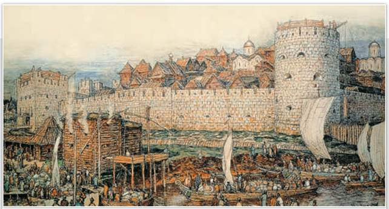
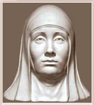
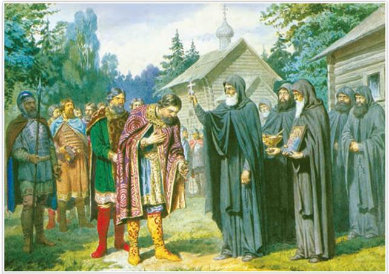
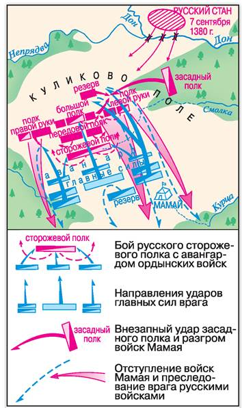
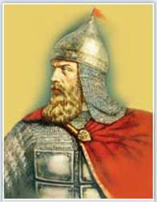
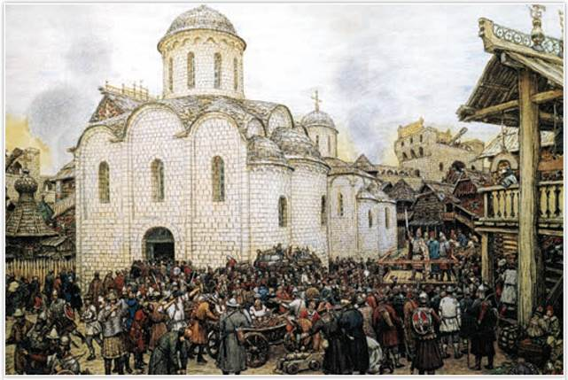

Московский Кремль при Дмитрии Донском. Художник А. Васнецов. 1922 г. Музей Москвы
На картине представлен вид на белокаменный Кремль со стороны реки Неглинки, которая сегодня спрятана в трубу — тоннель, проложенный под землёй. На переднем плане — пристань и бани, слева — Боровицкая башня, справа — Водовзводная.
РОССИЯ
МИР
1. Усобица в Орде и укрепление Москвы. В середине XIV в. в Золотой Орде началась жестокая и долгая борьба ханов за власть. В русских источниках ханскую усобицу называли «великой замятней». Другой бедой для Орды стала эпидемия чумы. Арабский средневековый автор сообщает, что «в землях Узбековых... опустели города и деревни».
Чума охватила и Москву. От «чёрной смерти» скончались сыновья Ивана Калиты. Престол занял его девятилетний внук Дмитрий Иванович (1359—1389). Соперники Москвы решили, что пришло время побороться за великокняжеский ярлык. Первым претензии предъявил суздальско-нижегородский князь Дмитрий Константинович. Но за своего князя дружно вступились московские бояре во главе с митрополитом Алексием, который был опекуном Дмитрия. Пока Дмитрий Иванович рос и набирался опыта, митрополит Алексий вёл все важные дела. С его помощью Москва отстояла право на ярлык. Суздаль признал старшинство Москвы. В знак дружбы молодой князь Дмитрий Московский женился на дочери суздальского князя Евдокии.

Евдокия Дмитриевна. Реконструкция С. Никитина
ИСТОРИЧЕСКИЙ ПОРТРЕТ
Княгиня Евдокия Дмитриевна
Евдокия Дмитриевна родилась в начале 1350-х гг. Отец выдал её за Дмитрия Ивановича совсем юной. Брак по расчёту оказался счастливым. В княжеской семье родилось 12 детей. Евдокия стала надёжной опорой своему супругу. Кроткий нрав, верность и необыкновенная сила духа отличали княгиню. Она была рядом с мужем в тяжёлые дни эпидемии чумы, страшного пожара в Москве, борьбы с Литвой. Она ждала его из поездок в Орду и молилась в дни сражений. Будучи одной из самых образованных женщин своей эпохи, княгиня заботилась об устройстве церквей и монастырей, приглашала иконописцев для росписи храмов, раздавала деньги и одежду бедным. Дмитрий относился к жене с большой любовью и доверием. По завещанию он наделил супругу не только землями, но и немалой властью. После смерти мужа Евдокия помогала своему сыну Василию справляться с государственными делами.
В конце 1360-х гг. в борьбу за ярлык вступил Михаил Тверской. Твери помогал литовский князь Ольгерд, состоявший в родстве с Михаилом. Он не один раз осаждал Москву, но взять её так и не сумел. В Москве его походы называли «литовщинами». Спасти москвичей от натиска литовских отрядов помогли белокаменные стены и башни Московского Кремля, построенные в 1366—1368 гг. вместо прежних дубовых. Это была первая каменная крепость на северо-востоке Руси. После третьей «литовщины» Ольгерд и Дмитрий заключили мир.
В 1375 г. уже Дмитрий Иванович повёл свои полки на Тверь и, как записал летописец, «всю Тверскую область опустошил и огнём пожёг...». После этого похода Дмитрия Михаил Тверской обязался не претендовать на великокняжеский ярлык и признал старшинство московского князя.
2. Битва на реке Воже. Ордынские ханы продолжали воевать за власть. Единство Орды распалось. В Волжском улусе правители менялись каждый год, пока там не утвердился хан Тохтамыш из рода Чингисидов. В западной части Орды, в Причерноморском улусе, заправлял грозный темник Мамай. Он не был потомком Чингисхана и поэтому не имел прав на ханский престол.
В 1377 г. на реке Пьяне ордынские отряды внезапно обрушились на объединённое войско нижегородцев и москвичей и нанесли им поражение. Ордынцы разграбили Нижний Новгород, опустошили земли рязанского князя.
В 1378 г. Мамай, не желавший признавать право Москвы на великое княжение Владимирское, послал на Русь рать военачальника Бегича. Мамаю требовалась дань, его целью была Москва. Русская дружина во главе с великим князем Дмитрием Ивановичем встретила врага в Рязанской земле на реке Воже. Битва произошла 11 августа 1378 г. Отряды Бегича пошли в атаку, но были обращены в бегство встречным ударом русского войска. Уцелевшие в сражении воины Бегича бежали в степь. На поле брани остались лишь их шатры да телеги. Это была первая крупная победа русского войска над Ордой. Она показала, что русские дружины могут побеждать ордынцев в бою.
3. Куликовская битва. В 1380 г. темник Мамай решил сам пойти по следам Батыя и наказать непокорных. Великий князь Олег Рязанский вступил в союз с Мамаем, но послал весть в Москву о наступлении врага. Таким же ненадёжным оказался для Мамая другой его союзник — литовский князь Ягайло Ольгердович. Он не пришёл на место решающей брани, а его старшие братья выступили на стороне Москвы.
По призыву великого князя Дмитрия Ивановича в Коломне собралось русское войско. Пришли полки московские, Владимирские, ростовские, ярославские и др. Есть мнение, что Софроний Рязанец сложил впоследствии «Задонщину», поэму о битве русских с Мамаем. Дмитрия Ивановича благословил на битву преподобный Сергий Радонежский, великий подвижник Русской земли.
Подробнее. Сергий Радонежский родился в середине 1310-х гг. в семье обедневших ростовских бояр. При рождении был назван Варфоломеем. Семья мальчика перебралась в город Радонеж (ныне село в Сергиево-Посадском районе Московской области). В начале 1340-х гг. Варфоломей принял монашество с именем Сергий. Он поселился в глухом лесу, где вместе с братом построил деревянную церковь Святой Троицы. К Сергию начали приходить монахи, он стал игуменом возникшего вскоре Троицына монастыря (ныне Троице-Сергиева лавра в городе Сергиев Посад). Сергий ввёл в монастыре общежительный устав, объединявший монахов в молитвах и трудах. Он приобрёл огромный авторитет как духовный наставник и для князей, и для простых людей. Был причислен Русской православной церковью к лику святых.

Сергий Радонежский благословляет Дмитрия Донского на ратный подвиг. Художник А. Кившенко
Из Жития Сергия Радонежского: «Следует тебе, господин, заботиться о порученном тебе Богом славном христианском стаде. Иди против безбожных, и если Бог поможет тебе, ты победишь и невредимым в своё Отечество с великой честью вернёшься».
Русские князья вместе разработали план боя. До трети сил поставили в засадный полк. Сожгли мосты через Дон, чтобы ни у кого не было соблазна побежать. Великий князь Дмитрий Иванович решил биться в доспехах простого воина в самом опасном месте — в рядах передового полка. Засадный полк возглавили двоюродный брат Дмитрия Ивановича Владимир Серпуховской и опытный воевода Дмитрий Боброк-Волынский.

Куликовская битва
Используя схему, расскажите о ходе сражения на Куликовом поле.
Утром 8 сентября 1380 г. над Куликовом полем, что у впадения реки Непрядвы в Дон, долго висел туман. Согласно «Сказанию о Мамаевом побоище», в 11 часов начался поединок русского богатыря Александра Пересвета и ордынца Челубея. С копьями наперевес они сошлись в схватке. Оба воина пали замертво.
Ордынцы ринулись вперёд. Русский сторожевой полк был уничтожен, ряды передового полка смяты. Князь Дмитрий Иванович получил тяжёлое ранение. Пехотинцы большого
полка выдержали атаку противника. Устоял и полк правой руки. Однако левый фланг русских под натиском ордынской конницы стал отходить к Непрядве.
Тогда Владимир Серпуховской и Дмитрий Боброк-Волынский бросили в бой спрятанный в лесу засадный конный полк, ударивший в тыл неприятеля. Это стало полной неожиданностью для Мамая, который уже предвкушал победу. Ордынцы побежали. Русские отряды гнали и секли врага до реки Красивая Меча. Дальше не пошли, сил уже не хватало.

Дмитрий Донской. Художник Л. Столыгво
ЧЕСТЬ И СЛАВА ОТЕЧЕСТВА
ИЗ «СКАЗАНИЯ О МАМАЕВОМ ПОБОИЩЕ». XV—XVI вв.
И сказал князь великий Дмитрий Иванович: «Братья, бояре, и князья, и дети боярские, суждено вам то место меж Дона и Днепра, на поле Куликовом, на речке Непрядве. Положили вы головы свои за святые церкви, за землю за Русскую и за веру христианскую. Простите меня, братья, и благословите в этом веке и в будущем. Пойдём, брат, князь Владимир Андреевич, во свою Залесскую землю к славному городу Москве и сядем, брат, на своём княжении, а чести мы, брат, добыли и славного имени!»
В память о победе на Куликовом поле великого князя Дмитрия Ивановича прозвали Донским, а Владимира Андреевича Серпуховского — Храбрым. День победы русских полков во главе с великим князем Дмитрием Донским над войском Мамая в Куликовской битве отмечается как День воинской славы России.
4. Нашествие Тохтамыша. Хан Тохтамыш разбил остатки войск Мамая на реке Калке. Преданный всеми Мамай бежал в Кафу (так генуэзцы называли Феодосию), где и погиб. Тохтамыш послал людей на Русь сказать, что он победил их общего врага. Дмитрий Донской отправил Тохтамышу богатые дары, но хан требовал дани. Спор Руси и Орды не был закончен.
В 1382 г. Тохтамыш появился в Рязанской земле. Олег Рязанский указал ему броды через Оку. Князь Дмитрий Константинович Нижегородский, желая спасти от разорения свои волости, послал хану дань и двоих сыновей в качестве заложников. Собрать общерусское войско Дмитрий не смог. Сказались потери на Куликовом поле, а также то, что воевать с темником Мамаем готовы были многие, но выступить против законного ордынского хана — далеко не все.

Оборона Москвы от хана Тохтамыша. XIV в. Художник А. Васнецов. 1918 г. Костромской государственный историко-архитектурный и художественный музей-заповедник.
Составьте рассказ от имени одного из участников события, изображённого на картине.
Дмитрий, уверенный, что Кремль выдержит осаду, уехал в Кострому, чтобы не вступать в переговоры с ханом. В Москве он оставил свою семью и митрополита Киприана. Но вскоре митрополит, княгиня и многие бояре бежали из Москвы. Москвичи на вече решили дать уйти всем, кто хочет, но отобрать у них имущество. Оборону доверили молодому литовскому князю Остею, оказавшемуся в Москве.
Три дня москвичи успешно оборонялись от войска Тохтамыша. Хан прибегнул к хитрости. Через братьев московской княгини он передал, что пришёл наказать только князя Дмитрия, а раз его нет в Москве, он хочет лишь даров как признания его власти. Вече решило уважить хана.
Духовенство и Остей вышли из города, неся дары, и тут же были убиты. Ордынцы ворвались в Кремль и принялись рубить всех без разбору. От города осталось пепелище. Отряды Тохтамыша направились в окрестности Владимира, Звенигорода, Юрьева-Польского, Дмитрова и Можайска. Сгорел Переяславль-Залесский, но люди уцелели, уплыв на лодках на середину Плещеева озера.
Удельному московскому князю Владимиру Серпуховскому удалось разбить большой отряд ордынцев. Тохтамыш начал отступать и, взяв Коломну, за Окой стал грабить волости Олега Рязанского. С Дмитрием Донским хан пошёл на компромисс. Он взял в заложники старшего великокняжеского сына Василия и дал Дмитрию ярлык на великое княжение Владимирское. Выплата дани Орде возобновилась.
Однако победа на Куликовом поле многое изменила. Русские люди поверили в свои силы, поняли, что, объединившись, можно одолеть Орду. Недаром позднее Куликовская битва стала одним из символов борьбы с иноземцами. Дмитрию Ивановичу впервые удалось собрать полки разных княжеств для совместных действий против Орды. Вырос авторитет московского князя. Москва подтвердила свою роль лидера в собирании русских земель в единое государство.
Значение правления Дмитрия Донского состоит в том, что ярлык на великое княжение Владимирское был закреплён за московскими князьями и их потомками по соглашению с законным правителем Орды Тохтамышем.
ПОДВЕДЁМ ИТОГИ
В период правления Дмитрия Донского укрепились позиции Московского княжества как важнейшего центра собирания русских земель. Дмитрий Иванович решительно изменил политику в отношении Орды: от мирного сотрудничества с ней он перешёл к вооружённому противостоянию. Победа на Куликовом поле дала надежду людям на освобождение от ордынского владычества.
Вопросы и задания
Работаем с хронологией
Расположите в хронологической последовательности события:
Работаем с источником
I. Прочитайте отрывок из труда историка С. Соловьёва «История России с древнейших времён» и ответьте на вопросы.
Важные следствия деятельности Димитрия обнаруживаются в его духовном завещании; в нём встречаем неслыханное прежде распоряжение: московский князь благословляет старшего своего сына Василия великим княжением Владимирским, которое зовёт своею отчиною. Донской уже не боится соперников для своего сына ни из Твери, ни из Суздаля. ...Завещатель выражает надежду, что сыновья его перестанут давать выход в Орду.
II. Прочитайте отрывок из книги историка Д. Володихина «Рюриковичи» и ответьте на вопросы.
Власть ордынцев над Русью восстановилась. Какое же значение имела битва на поле Куликовом? Северо-Восточная Русь научилась, как в старину, собираться воедино и бить даже самого многочисленного противника. Единство русских земель постепенно нарастало, в то время как огромная Орда слабела и раскалывалась на более мелкие государства. После Куликова поля окончательное прощание с ордынским игом стало делом времени.
Работаем с понятиями
Преподобные — это особый чин святости в христианстве, монахи, стремившиеся быть подобными Иисусу Христу. Кто из церковных деятелей, упоминаемых в параграфе, удостоился этого чина?
ДОПОЛНИТЕЛЬНЫЕ МАТЕРИАЛЫ
«УЧИТЕЛЮ И УЧЕНИКУ».
Материалы к параграфу на портале «История.РФ».